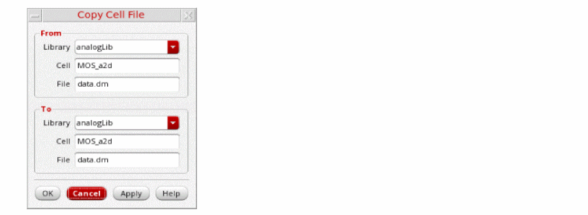

Copying a Cell File in the Library Manager
To copy a cell file, follow these steps:
-
Select a cell file.
If you are viewing library information in View – Lists mode, make sure the Show Files check box is selected. -
Choose Edit – Copy.
The Copy Cell File form appears.The selected cell file appears in the Library, Cell, and File fields in the From group box. It also appears in the Library, Cell, and File fields in the To group box. You can change any or all of these values. -
To complete the copy cell file operation, follow the steps for one of the following tasks:
To copy a cell file to another name for the same cell in the same library,- Open the Copy Cell File form.
- In the To group box in the File field, type a destination cell file name.
- Click OK. The From file name is copied to the To file name for the same cell in the same library.
- Copy a cell file to the same name for a different cell in the same library
To copy a cell file to the same name for a different cell in the same library,- Open the Copy Cell File form.
- In the To group box in the Cell field, type a destination cell name.
- Click OK.The cell file is copied to the specified To cell name in the same library.
- Copying a cell file to another name for a different cell in the same library
To copy a cell file to another name for a different cell in the same library- Follow the steps from Copying a Cell File in the Library Manager.
- In the To group box in the Cell field, type a destination cell name.
- In the To group box in the File field, type a destination cell file name.
- Click OK. The From file name is copied to the specified To cell and file name in the same library.
- Copying a Cell File to Another Library
To copy a cell file to another library, do the following:- Open the Copy Cell File form.
- In the To group box in the Library field, type or select a destination library name.
- You can type a new library name or select an existing library from the drop-down list.
- In the To group box in the Cell field, type a destination cell name.
- If you do not change the cell name in the To group box, the copied cellview displays the same cell name as the original cell.
- In the To group box in the File field, type a destination cell file name.
- If you do not change the cell file name in the To group box, the copied file displays the same name as the original file.
- Click OK.
The From cell file is copied to the To cell file in the To Library. If the destination library does not already exist, the New Library form appears where you can specify a location and design management option for the new library.
Related Topics
Controlling the Display of Library Information
Return to top